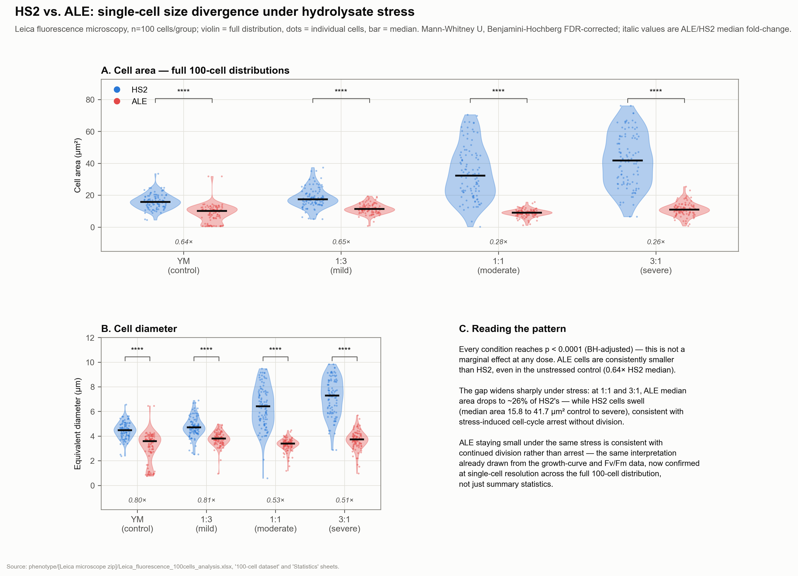
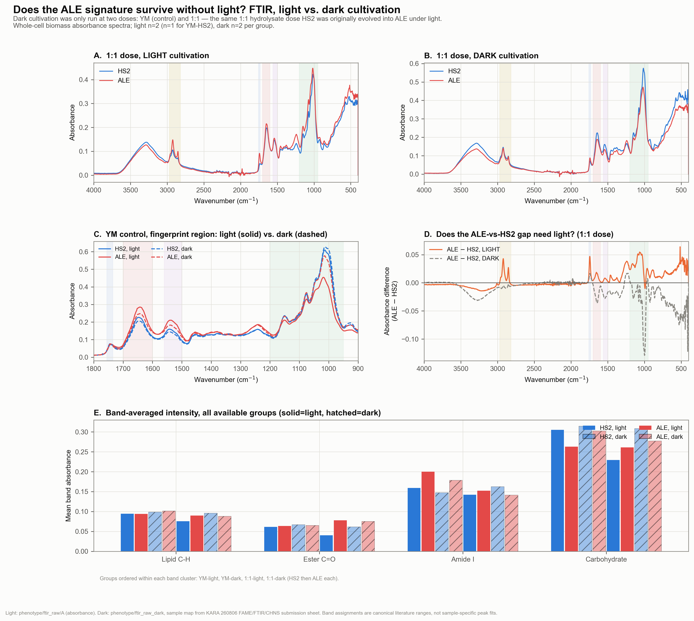
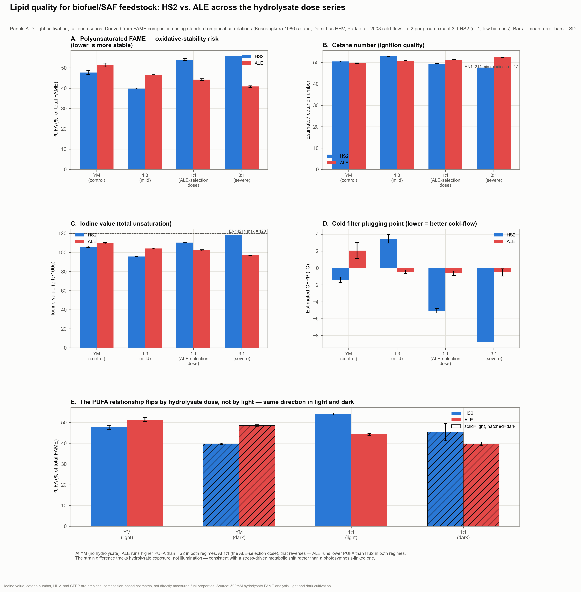
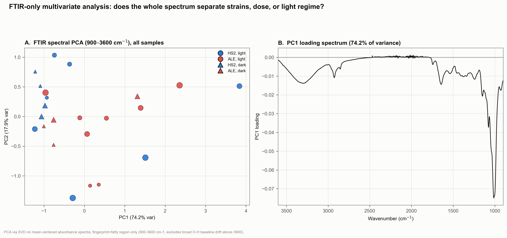
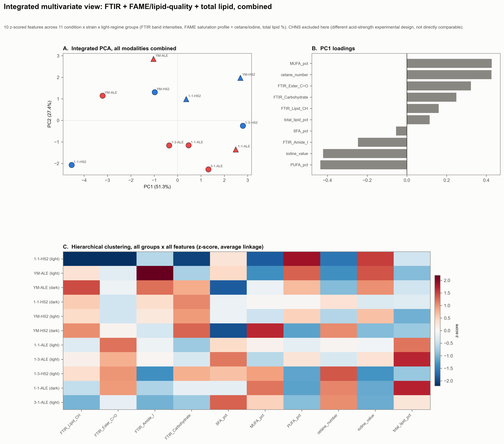

02 — Phenotype
Eighteen months of selection produced a measurably different alga
Before asking what changed in the genome, here is what changed in the flask: a clean, dose-dependent growth advantage under hydrolysate stress, a plausible light-linked mechanism behind it, and a consistent biochemical and single-cell signature across seven independent measurement types. The genotype sections below exist to explain this.

Growth & mechanismFlask-scale growth (n=2) across a hydrolysate dose series: HS2 and ALE converge in standard media, diverge under stress, and HS2 fails outright at the harshest concentration — while leaving nearly all the glucose in the medium unconsumed. The advantage is markedly reduced in the dark, pointing to a photosynthesis-linked mechanism rather than pure heterotrophic detoxification.

Photosynthetic efficiencyOJIP chlorophyll-fluorescence induction (Fv/Fm), a direct physiological read on PSII integrity. Baseline Fv/Fm (~0.47) is indistinguishable between strains. At severe (3:1, 0.5M HCl) stress, HS2 shows a sharp transient PSII disruption at 24h (dropping to ~0.20) that ALE does not share, though by 96h both strains converge to a similar range (HS2 0.51 vs. ALE 0.47) — a transient-injury signature that only partially mirrors the growth-failure phenotype, a reminder that independent measurements don't always reinforce each other to the same degree. In the dark, where PSII isn't being actively driven, strain and dose differences compress overall, consistent with the light-linked mechanism the growth curves already pointed to.

Single-cell resolutionFluorescence microscopy, 100 cells per group, Mann-Whitney U with FDR correction. Under stress, HS2 cells swell dramatically (consistent with stress-induced cell-cycle arrest) while ALE keeps dividing at a normal size. ALE also shows a consistent shift toward lipid storage over pigment content (elevated Nile red, reduced autofluorescence) present even without stress.

Cell size, full distributionSame single-cell dataset as above, shown as complete 100-cell distributions rather than summary boxplots, for area and diameter together. ALE is smaller than HS2 at every condition (p<0.0001, BH-adjusted, all four doses) — already 0.64× the HS2 median area in the unstressed control, widening to ~0.26× under severe stress as HS2 cells swell while ALE holds a normal, dividing size.

Whole-cell biochemistryFTIR absorbance spectra of whole-cell biomass. At the severe (3:1) hydrolysate condition, ALE shows reduced Amide I (protein) signal relative to HS2 alongside a modest increase in ester C=O (storage lipid) — consistent with the lipid-over-protein/pigment reallocation seen at single-cell resolution, now confirmed by an independent, label-free biochemical method.

Does the ALE signature need light?Dark cultivation was only run at two doses: YM (control) and 1:1 — the same 1:1 hydrolysate dose HS2 was evolved into ALE under, this time run in the dark. The ALE-vs-HS2 difference spectrum changes character between light and dark rather than simply shrinking, suggestive of a light-dependent component to the phenotype — worth stating carefully rather than overclaiming from a two-dose comparison.

Fatty acid profileGC-derived FAME analysis (corrected: an earlier pass in this figure double-counted a pre-computed row-total column as saturated fat, inflating the reported SFA share to ~65% — traced and fixed). The real picture: SFA is genuinely stable (~30–33% across every condition), but the MUFA/PUFA split is not — at the 1:1 dose (the same condition HS2 was evolved into ALE under), HS2 skews sharply toward PUFA (54%) while ALE shifts toward MUFA (24% vs. HS2's 14%), a reversal not seen at any other dose. This is the same pattern examined for fuel-quality implications below.

What the lipid shift means for fuel qualityStandard biodiesel/SAF-precursor quality indices (cetane number, iodine value, cold filter plugging point — empirical composition-based estimates, not measured fuel properties) computed from the corrected FAME data. At the 1:1 dose, ALE's shift toward MUFA raises its estimated cetane number and lowers its iodine value relative to HS2 — both in the direction of better fuel quality — at a modest cold-flow tradeoff. The same MUFA/PUFA relationship reappears in both light and dark at the matched doses, tracking hydrolysate exposure rather than illumination.

Total lipid yieldGravimetric extraction, independent of the Nile red imaging and FAME composition above. ALE out-yields HS2 at every condition, including the unstressed YM control (20.3% vs 19.6%) — the lipid-storage bias is not purely stress-induced. The gap widens under stress (36.7% vs 21.0% at 1:3) and persists into the dark at the matched 1:1 condition.

Elemental composition (CHNS)Whole-cell nitrogen content is condition-dependent, not a fixed strain trait: under the milder 0.25M HCl hydrolysate, ALE runs consistently higher in nitrogen than HS2 (e.g. 17.0% vs 8.8% at 1:1) — consistent with elevated protein/amino-nitrogen biomass under this stress. Under the harsher 0.5M HCl condition the gap narrows and reverses at the most severe dilution, matching the same acid-strength-dependent divergence already seen in growth and single-cell data.

FTIR alone, unsupervisedPCA on the full absorbance spectrum (900–3600 cm-1), every sample, no group-averaging. Reported honestly rather than oversold: PC1 (74% of variance) is dominated by the strong ~1000 cm-1 carbohydrate band and tracks overall spectral magnitude, not strain identity — HS2 and ALE overlap substantially in this space. Dark-condition samples cluster tightly regardless of strain; light samples spread far more broadly. FTIR alone does not cleanly separate the strains; the signal that does is elsewhere (below).

Where the real integrated signal isCombining FTIR band intensities with the FAME saturation profile, fuel-quality indices, and total lipid yield (z-scored, PCA + hierarchical clustering; CHNS excluded here as it used a different acid-strength experimental design, not directly comparable to the rest). PC1 (51% of variance) is loaded almost entirely by the lipid-quality axis — MUFA, cetane number, PUFA, iodine value — not by FTIR. The single largest outlier in the entire dataset is HS2 at the 1:1 dose, driven by its unusually high PUFA/low MUFA at exactly the condition ALE was evolved under. The lipid-composition shift, not the whole-cell FTIR fingerprint, is the dominant cross-modality signal distinguishing the strains.